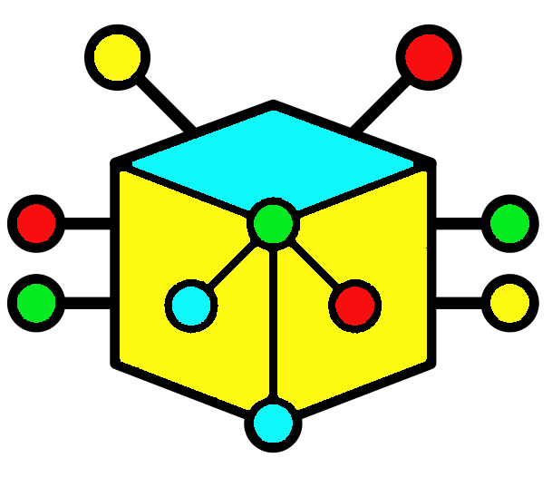
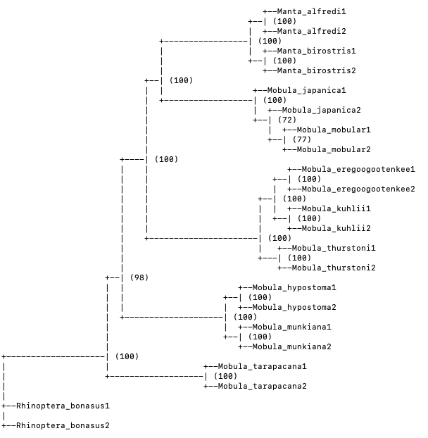

Chapter 6 Model selection, tree reconstruction and support evaluation
We will use IQ-TREE to construct and evaluate a phylogenetic tree. IQ-TREE is a popular package that uses a very fast and efficient algorithm to infer phylogenomic trees under a maximum-likelihood framework. It also incorporates modules for evaluating and selecting models prior to tree reconstruction, and for bootstrapping to determine nodal support. These modules, ModelFinder, for evaluating models, and UFBoot for evaluating support, are substantially faster than many alternative, stand-alone packages, such as jModelTest or the bootstrapping procedure that is used in RAxML, another popular and widely-used, likelihood-based, phylogenetic-reconstruction package. The latest version, IQTREE-2, can be installed in Linux, Windows and Mac systems, and offers a range of new tree-search options and sequence evolution models. There is also a IQ-TREE web-server to which jobs can be submitted.
Navigate to the 'iqtree' directory:
We will produce a phylogenetic tree of ten species of manta- and devil-rays, including two representatives of each of eight Mobula species and two former Manta species, and two Rhinoptera bonasus individuals as outgroup representatives. The data were produced exactly as in the previous chapter, following the second approach in which we maximised the number of SNP loci included. We are deliberately including a sparse data set (which many deeper phylogenetic data sets are likely to be) in order to potentially introduce uncertainty into our reconstruction and support evaluation.
If we were to use the first approach and eliminate all missing data, we would have been left with only 307 characters to analyse, opposed to 1 678 from the previous exercise! This demonstrates quite nicely how the number of RAD loci and SNPs that are common to all samples in the Stacks catalogue decreases and missing data increase when one adds more distantly-related species to a dataset. In this case, we have added more species, representatives of species that previously belonged to another genus, Manta, and a more distantly-related outgroup.
Take a look at the 'popmap' used to generate this data set to get a feel for the individuals and taxa included.
Check that you have the Phylip file ('manta_phylogeny.phylip') that we will use for the analysis.
You can take a look at the header of this file to see the dimensions (taxa X characters) of the matrix.
We will now work through the various steps of tree construction. Although many of the steps can be combined in a single command and IQ-TREE analysis, we will estimate a best-fit model of nucleotide-evolution, construct a phylogenetic tree and evaluate bootstrap support separately in order to pause and consider the procedure and results.
6.1 Estimating a best-fit model of nucleotide or sequence evolution
"All models are wrong, but some are useful"
--- George E. P. Box

IQ-TREE supports and tests the fit of well over 100 variations of models of sequence evolution, including traditional rate-matrix (base substitution) base frequency models and newer Lie Markov models. It can also accommodate advanced partition models and mixture models, should these be needed for your data.
To evaluate and choose a model, we will use this code:
In this,
- -s denotes our data input file. IQ-TREE can support sequence alignments in PHYLIP, fasta, NEXUS and a number of other formats.
- -m indicates that we wish to use ModelFinder (MFP) to find the most appropriate model.
This analysis should take about two minutes to run and will log useful output to the terminal. This will also be saved as a log file ('manta_phylogeny.log'). For each of the evaluated models, it reports the log-likelihood (-lnL; the likelihood of observing the data given this particular model and the topology of a preliminary tree constructed using parsimony), and the Akaike Information Criterion (AIC), the corrected Akaike Information Criterion (AICc) and Bayesian Information Criterion (BIC) scores used in comparing the models. Our choice is based on the BIC, with the model minimising the BIC favoured. You can set this if you want to use one of the other criteria. Once IQ-TREE has identified the optimal model, it will generate a number of of candidate trees to fit, and then estimate and optimise the parameters of our chosen model, which is the final output in the terminal.
Open the log-file and scroll through the output:
- Which is the optimal model for this data set, as selected by the BIC?
An overview of the various models of sequence or nucleotide evolution can be found here. At the base are a number of simple or straight-forward models (with very few parameters), but these are made increasingly more complex as more parameters are allowed to vary or are added. Older software packages only implemented simpler models, but with increasing computing power, we can now make the models a lot more complicated and specific. This is often needed for our larger and more complex data sets.
The model chosen here is a simple two-parameter model. The base frequencies are all equal (at 0.25), and we have differing substitution rates (1.000 and 5.574) for transitions and transversions. In this instance, a correction for ascertainment bias (the '+ASC') has also been included. SNP data (like morphological data) are biased in that we only include variable data and have no constant sites or characters in our data sets. This needs to be considered when calculating and evaluating tree statistics and branch lengths.
6.2 Constructing a maximum-likelihood phylogenetic tree
We will now construct a maximum-likelihood phylogenetic tree, implementing the chosen model and the parameters we have estimated.
In this command,
- -s again refers to the input data file.
- -m invokes the model we want to use. We can specify MFP if we want to search for a model and construct the tree in one command. We have already performed this step, so here we will just specify the model that was selected above (K2P+ASC).
- -o: We use this to specify our outgroup, ' Rhinoptera_bonasus1 ' in this case. If you do not specify an outgroup, IQ-TREE will regard the tree as unrooted, but will use the first taxon/entry in your alignment to root it for display purposes.
- -redo: This is a neat safety feature built into IQ-TREE to prevent you accidentally overwriting previous work. If you have run analyses on a particular data file and generated log and output files before and you execute a command without -redo, it will issue an error warning and not execute. You are welcome to try the above command without -redo to see what happens.
The report and output of the analysis will be written to the output file 'manta_phylogeny.phylip.iqtree'. You can open this to see the summary of the data and the parameters that were used, the tree statistics (likelihood score and length) and the tree itself. You may need to resize your terminal window or it might spread each branch of the tree over multiple lines of the terminal and make it hard to interpret. If this happens, resize your window and execute the command again.
The tree is also presented in Newick format at the bottom of the file. The parentheses (brackets) and commas indicate the relationships and branching patterns in the tree, while the numbers indicate the branch lengths, as proportional mutations along that branch to the next node or to the taxon (at the tips). Newick annotation is a widely-used format and is accepted by most phylogenetic applications that would need a tree topology as input, and there are several editors (e.g., FigTree) available to manipulate tree topologies in this format, and to save the tree graphically for editing and publication. A separate Newick treefile ('manta_phylogeny.phylip.treefile') is written by IQ-TREE and can be used for this purpose.
A few things are apparent from this tree. As expected, the two representatives of each species group together, except for Mobula japanica (we'll come back to this), but those species belonging to the former genus Manta are nested within the genus Mobula. Let's examine the support for this and other relationships.
6.3 Calculating nodal support
We'll use ultrafast bootstrap approximation, developed by Minh et al. (2013) and implemented in UFBoot, to calculate support for our nodes and relationships in the tree. This approach is orders of magnitude faster than non-parametric (i.e., "traditional") bootstrapping, is less sensitive to model violations and produces less biased estimates of support.
We will execute the command as before, with one addition:
We specify (with the -bb) the number of bootstrap replicates we want to perform; 1000 is recommended as a minimum. Once complete, we can open the updated 'manta_phylogeny.phylip.iqtree' file to see the resulting tree with the bootstrap support values appended.
The interpretation of ultrafast bootstrap approximation support is slightly different to that of traditional bootstrapping, and the support produced by the two methods can't really be compared. We only consider UFBoot support > 95% as being meaningful, whereas non-parametric bootstrap values > 75% are generally accepted as supported (because this metric underestimates support). Nevertheless, our tree shows that most of the relationships are well-supported, including the placement of the two Manta species within Mobula, but we'll test that further in the next chapter.
By way of comparison, the figure below indicates the slight difference in support generated by non-parametric bootstrapping. This analysis used only 100 replicates and took nearly 45 minutes on this modest data set, compared to the two minutes it took to perform 10 000 UFBoot replicates.
